The First Large-Scale Dataset Ecosystem for Evaluating Mathematical Spatial Reasoning in Multimodal Large Language Models
MathSpatial Team
MathSpatial provides nearly 10,000 problems with 26,000+ geometric diagrams, covering tasks from multi-view recognition to geometric property calculation. It is the first open dataset ecosystem dedicated to mathematical spatial reasoning in MLLMs.
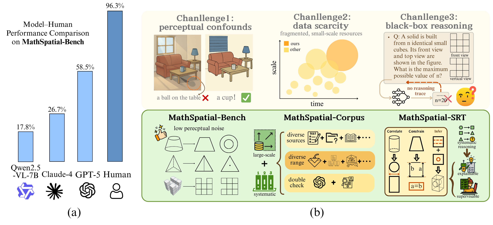
Left: Humans achieve over 95% accuracy on MathSpatial-Bench while most MLLMs remain below 60%. Right: Three core challenges and how MathSpatial addresses them.
2,000 problems with 5,837 images for diagnostic evaluation with calibrated difficulty.
7,964 problems with 20,308 images for training with verified solutions.
9,962 structured reasoning traces following the Correlate → Constrain → Infer paradigm.
3 main categories × 11 subtypes covering representative tasks in mathematical spatial reasoning education.
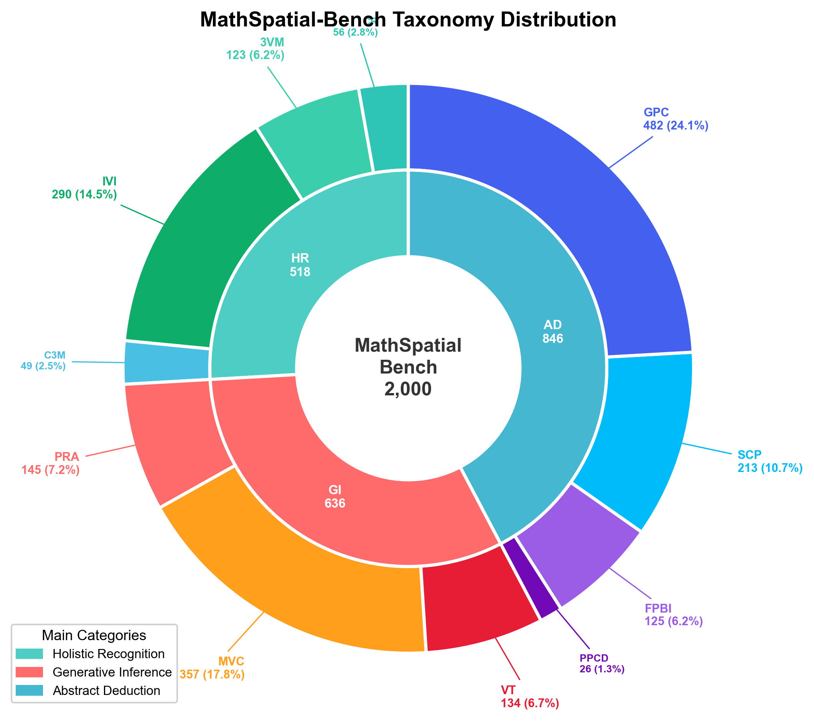
Taxonomy: Holistic Recognition (518), Generative Inference (636), and Abstract Deduction (846).
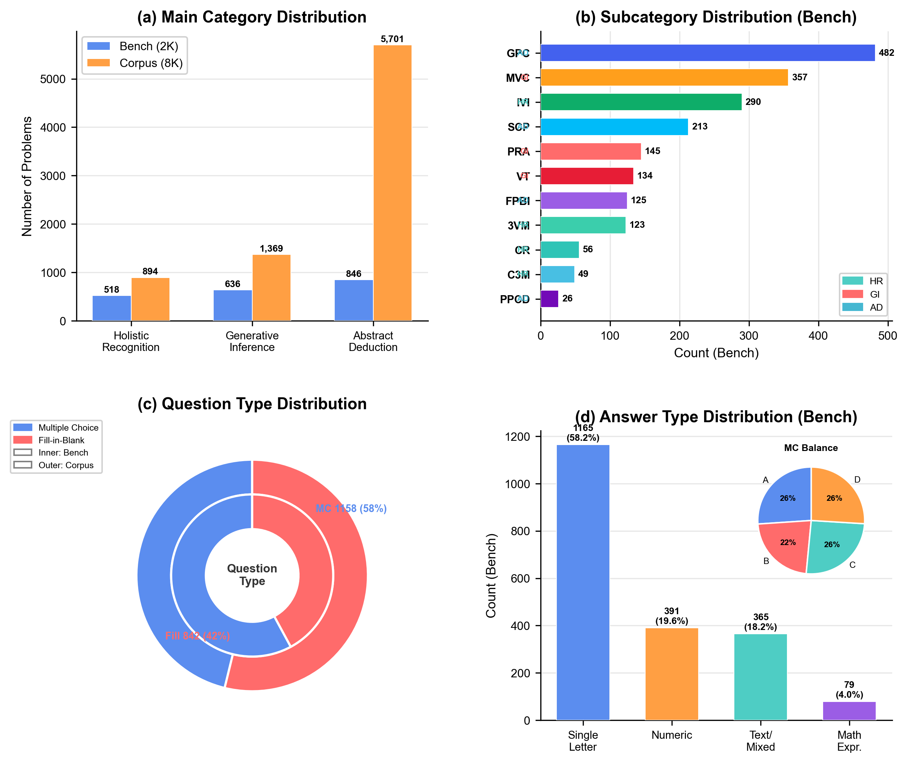
(a) Category distribution across Bench & Corpus. (b) Subcategory breakdown. (c) 58% multiple-choice, 42% fill-in-blank for Bench. (d) Balanced A/B/C/D answer distribution.
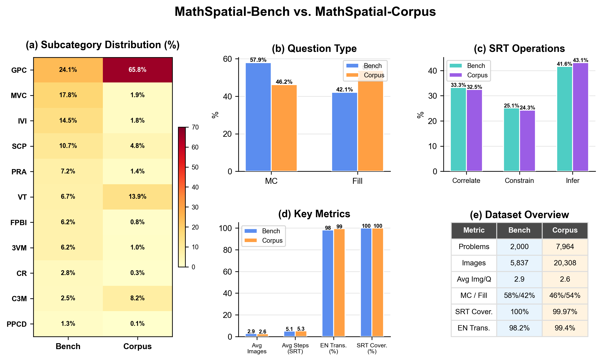
Bench vs. Corpus comparison across categories.
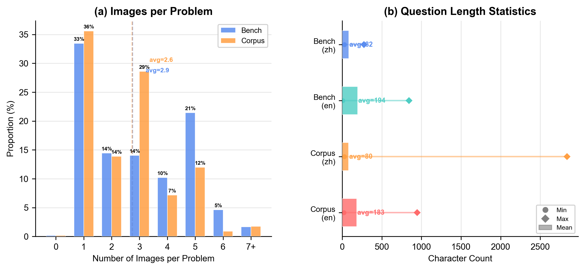
Image count per problem and question length statistics.
Examples from three main categories: Holistic Recognition, Generative Inference, and Abstract Deduction.
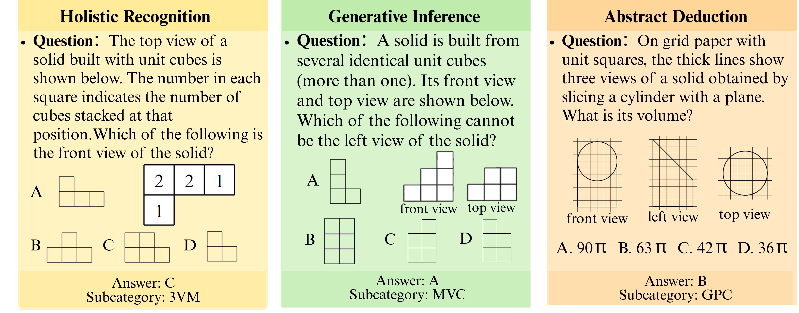
Holistic Recognition: matching 3D objects to views. Generative Inference: completing missing views. Abstract Deduction: calculating geometric properties.
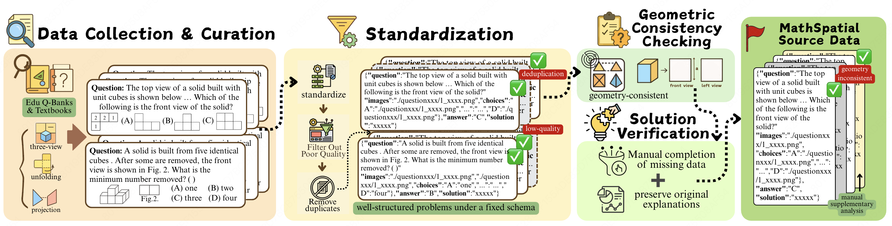
Starting from 35,428 raw candidates → Manual Filtering → Standardization → Geometric Checking → Solution Verification → Final 9,964 problems.
Overall accuracy on MathSpatial-Bench. Humans achieve 96.3% while the best MLLM reaches 58.5%.
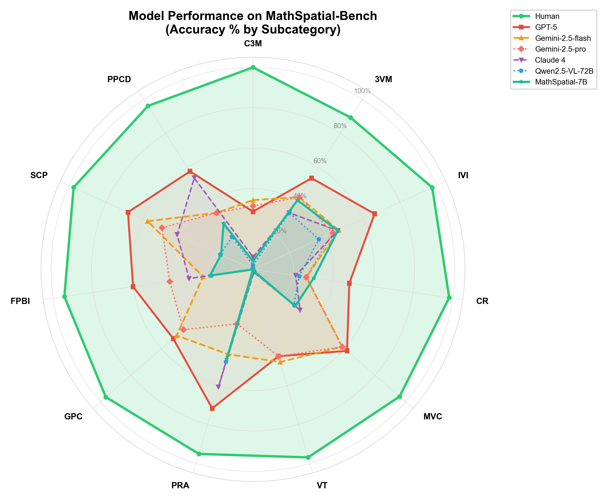
| # | Model | Type | Overall | Best Subtype | Worst Subtype | Avg Tokens |
|---|---|---|---|---|---|---|
| — | Human | — | 96.3% | C3M (100%) | 3VM (89.4%) | — |
| 1 | GPT-5 | Closed | 58.5% | PRA (71.7%) | C3M (28.6%) | 676 |
| 2 | Gemini-2.5-flash | Closed | 48.5% | MVC (58.5%) | FPBI (25.0%) | 1115 |
| 3 | Gemini-2.5-pro | Closed | 44.9% | MVC (58.5%) | PRA (28.1%) | 914 |
| 4 | Claude 4 | Closed | 26.7% | PRA (60.7%) | GPC (0.2%) | 1006 |
| 5 | Llama-4-Maverick-17B | Open | 23.8% | PRA (47.6%) | GPC (4.6%) | 845 |
| 6 | MathSpatial-InternVL3-8B ⭐ | Ours | 22.6% | 3VM (50.4%) | C3M (2.0%) | 318 |
| 7 | MathSpatial-Qwen-7B ⭐ | Ours | 22.1% | IVI (46.2%) | GPC (0.0%) | 352 |
| 8 | GPT-4.1 | Closed | 22.6% | PRA (55.2%) | GPC (0.0%) | 676 |
| 9 | Qwen2.5-VL-72B | Open | 19.7% | — | — | — |
| 10 | InternVL3-78B | Open | 19.5% | — | — | — |
| 11 | Qwen2.5-VL-7B | Open | 17.8% | — | — | — |
| 12 | InternVL3-8B | Open | 17.1% | — | — | — |
Full results for 16+ models available in the paper. Our fine-tuned models match or exceed much larger closed-source systems while using 50–60% fewer tokens.
MathSpatial reveals fundamental limitations of current MLLMs in spatial reasoning.
Humans achieve 96.3% accuracy; the best MLLM (GPT-5) reaches only 58.5%, revealing a 37.8% gap.
Most models score below 5% on Geometric Property Calculation (GPC), the most abstract subtype.
Qwen2.5-VL-72B (19.7%) barely improves over its 7B variant (17.8%), showing scaling limits.
Fine-tuned models improve accuracy while reducing token usage by 20–30% with SRT supervision.
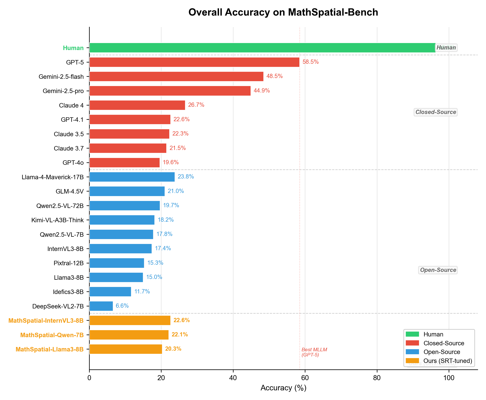
Overall accuracy comparison across all evaluated models on MathSpatial-Bench.
Every problem is annotated with structured traces decomposing spatial reasoning into three atomic operations.
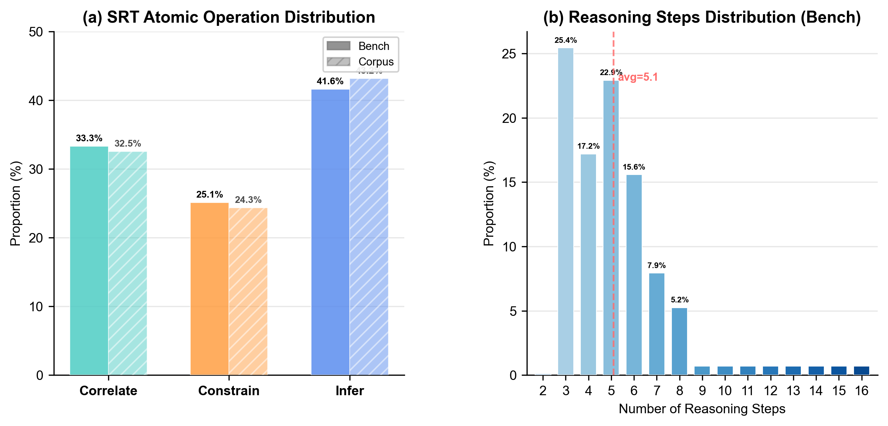
(a) Operation distribution: Infer ~42% > Correlate ~33% > Constrain ~25%. (b) Average trace length: 5.1 steps.
| Correlate | Establish cross-view correspondences |
| Constrain | Apply geometric rules or constraints |
| Infer | Deduce conclusions from evidence |
MathSpatial vs. existing benchmarks in mathematical and spatial reasoning.
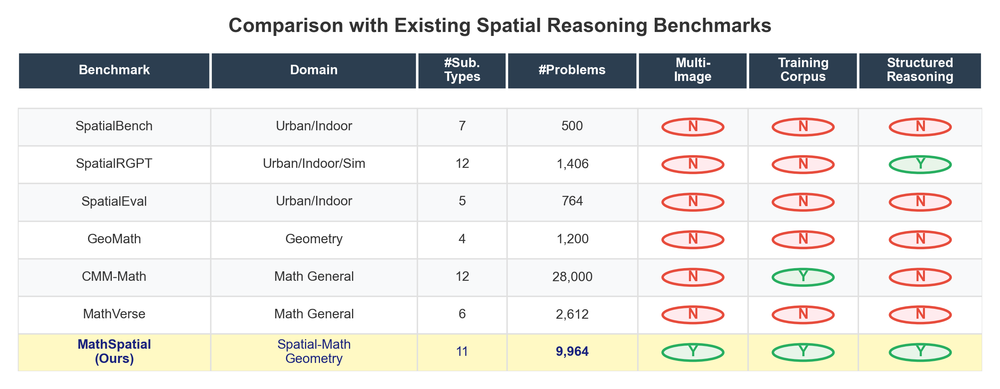
Comprehensive comparison with existing datasets across multiple dimensions.
If you find MathSpatial useful in your research, please cite our paper:
@article{mathspatial2025,
title={MathSpatial: A Large-Scale Dataset for Evaluating Mathematical
Spatial Reasoning in Multimodal Large Language Models},
author={MathSpatial Team},
journal={ACM Multimedia},
year={2025}
}